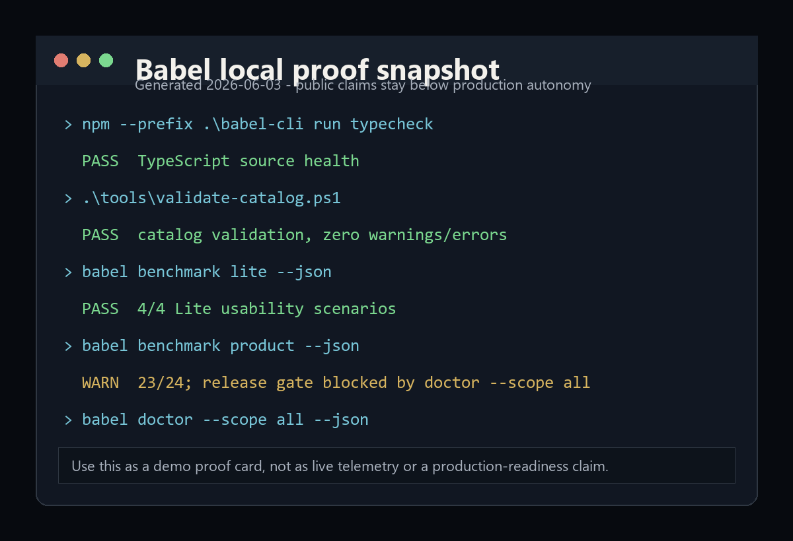

TypeScript typecheck
Local CLI typecheck passed in the current investigation.
Experimental CLI prototype
A public-safe origin for the Babel demo: catalog-backed instruction-stack previews, typed CLI diagnostics, and honest proof links without production-autonomy claims.

Current proof posture
Local CLI typecheck passed in the current investigation.
Local catalog validation passed with current entries and zero warnings/errors.
`bl ask`, `bl plan`, `bl fix`, and patch compatibility scenarios passed.
One release-readiness gate is still blocked by workspace doctor state.
What it is
Babel is a catalog-driven CLI/control-plane prototype. Its safest public story is validation, preview, diagnostics, and evidence discipline for prompt/instruction stacks.
Not: operational agent infrastructure.
Not: a broad autonomous coding-agent reliability claim.
Not: a fixed catalog-count claim without fresh dated evidence.
Next: fix doctor red gates, refresh public export, then deploy a preview.